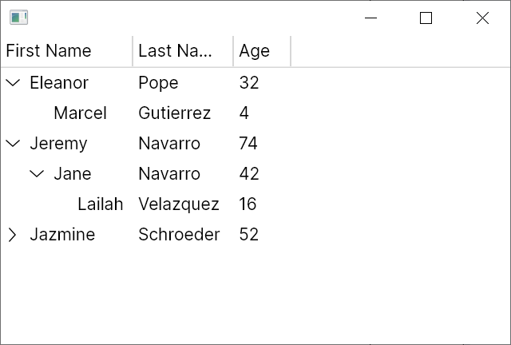

Quickstart: Hierarchical TreeDataGrid
This quickstart builds a complete hierarchical TreeDataGrid with expandable rows.
Goal
Create a parent/child dataset where each row can expand to show children.
1. Data Model
Create Person.cs:
using System.Collections.ObjectModel;
public class Person
{
public string? FirstName { get; set; }
public string? LastName { get; set; }
public int Age { get; set; }
public ObservableCollection<Person> Children { get; } = new();
}
2. View Model with Hierarchical Source
Create MainWindowViewModel.cs:
using System.Collections.ObjectModel;
using Avalonia.Controls;
using Avalonia.Controls.Models.TreeDataGrid;
public class MainWindowViewModel
{
private readonly ObservableCollection<Person> _people = new()
{
new Person
{
FirstName = "Eleanor",
LastName = "Pope",
Age = 32,
Children =
{
new Person { FirstName = "Marcel", LastName = "Gutierrez", Age = 4 },
}
},
new Person
{
FirstName = "Jeremy",
LastName = "Navarro",
Age = 74,
Children =
{
new Person
{
FirstName = "Jane",
LastName = "Navarro",
Age = 42,
Children =
{
new Person { FirstName = "Lailah", LastName = "Velazquez", Age = 16 },
}
}
}
},
};
public MainWindowViewModel()
{
Source = new HierarchicalTreeDataGridSource<Person>(_people)
{
Columns =
{
new HierarchicalExpanderColumn<Person>(
new TextColumn<Person, string>("First Name", x => x.FirstName),
x => x.Children),
new TextColumn<Person, string>("Last Name", x => x.LastName),
new TextColumn<Person, int>("Age", x => x.Age),
},
};
// Optional: expand first root row at startup.
Source.Expand(new IndexPath(0));
}
public HierarchicalTreeDataGridSource<Person> Source { get; }
}
Important:
- Hierarchical sources require exactly one expander column.
HierarchicalExpanderColumn<TModel>wraps an inner column and child selector.
3. Bind in XAML
<Window xmlns="https://github.com/avaloniaui"
xmlns:x="http://schemas.microsoft.com/winfx/2006/xaml"
x:Class="AvaloniaApplication.MainWindow">
<TreeDataGrid Source="{Binding Source}" />
</Window>
4. Set DataContext
public partial class MainWindow : Window
{
public MainWindow()
{
InitializeComponent();
DataContext = new MainWindowViewModel();
}
}
5. Run
Verify expansion behavior:

What You Have Now
- A bound hierarchical source
- Expand/collapse row behavior
- Multiple columns in hierarchical mode
Common Next Steps
- Handle expansion events (
RowExpanding,RowExpanded) - Programmatically expand/collapse ranges
- Add custom cell templates
Troubleshooting
Feature behavior differs from expectations Cause: one or more options in this scenario are configured differently (source type, column options, sort/selection/edit state). Fix: compare your setup with the snippet in this article and verify runtime values on
Source,Columns, andSelection.Data changes are not visible in UI Cause: model or collection notifications are missing, or a replaced collection/source is not re-bound. Fix: ensure
INotifyPropertyChanged/INotifyCollectionChangedflow is active and reassignSourceafter replacing underlying collections.